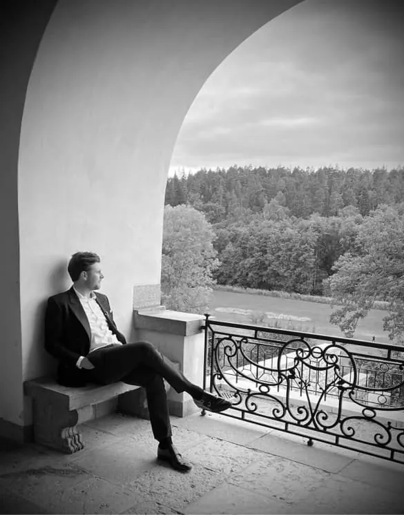

Alla bra byggen börjar
med ett samtal.
Berätta om din idé, var du vill bygga och vad som är viktigt för dig. Vi pratar gärna igenom nästa steg.
Ring Dennis070 898 42 12Mejla om ditt projektdennis@tyresobygg.se
Mejlknappen öppnar ditt mejlprogram.
Vi använder tills vidare vår befintliga adress på tyresobygg.se.
Dennis LennhammerVd & ägare · Hammer Byggproduktion AB

Din första kontakt hos Hammerbygg.Ta gärna med
det här i ditt mejl.
- Vad du vill bygga eller förändra
- Var fastigheten finns
- Önskad start och ungefärlig omfattning
- Bilder, skisser eller ritningar om du har dem
Stockholm.
Och hela vägen ut i skärgården.
Nybyggnation, renovering och byggservice. För skärgårdsarbeten utgår vi från Djurö.
Läs mer om skärgårdsprojekt